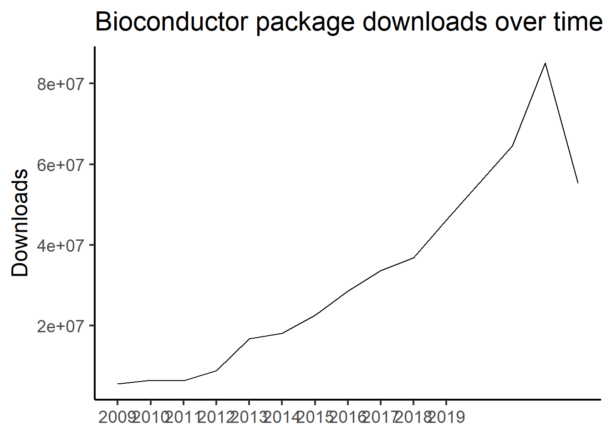

── Attaching core tidyverse packages ──────────────────────── tidyverse 2.0.0 ──
✔ dplyr 1.1.2 ✔ readr 2.1.4
✔ forcats 1.0.0 ✔ stringr 1.5.0
✔ ggplot2 3.4.2 ✔ tibble 3.2.1
✔ lubridate 1.9.2 ✔ tidyr 1.3.0
✔ purrr 1.0.1
── Conflicts ────────────────────────────────────────── tidyverse_conflicts() ──
✖ dplyr::filter() masks stats::filter()
✖ dplyr::lag() masks stats::lag()
ℹ Use the conflicted package (<http://conflicted.r-lib.org/>) to force all conflicts to become errorsWeek One
Data strutures in R
Orientation
Package stats for Bioconductor
read_tsv("https://bioconductor.org/packages/stats/bioc/bioc_pkg_stats.tab") %>%
filter(Year != 2020) %>%
select(Year, Nb_of_downloads) %>%
group_by(Year) %>%
summarise(sum = sum(Nb_of_downloads)) %>%
ggplot(mapping = aes(x = Year, y = sum)) +
geom_path() +
scale_x_continuous(breaks = 2009:2019) +
theme_classic(base_size = 18) +
labs(x = NULL, y = "Downloads", title = "Bioconductor package downloads over time")Rows: 324831 Columns: 5
── Column specification ────────────────────────────────────────────────────────
Delimiter: "\t"
chr (2): Package, Month
dbl (3): Year, Nb_of_distinct_IPs, Nb_of_downloads
ℹ Use `spec()` to retrieve the full column specification for this data.
ℹ Specify the column types or set `show_col_types = FALSE` to quiet this message.
Slide with Plot
Simple Data Structures
Characters
Characters hold “string” data. For example:
"Hello world"[1] "Hello world"Numbers
Numbers can be integers or numerics (i.e., floats) in R. For example:
1[1] 12.2[1] 2.23E100[1] 3e+100Logicals
Logicals are either TRUE or FALSE. For example:
TRUE[1] TRUEFALSE[1] FALSEData Structure Classes
We can identify the “type” or “class” of an object in R with the class function:
Data Structure Classes cont.
We can also use the str function to see the “structure” of any R object:
Simple Data Structure Methods
The print Method
The print method works on any data type in R:
* Notice that this is the same as simply typing the data into the R console and hitting <enter>
Arithmetic Methods
Arithmetic Methods for numeric data types:
# Addition
1 + 1 [1] 2# Subtraction
1 - 1[1] 0# Multiplication
2 * 2[1] 4# Division
10 / 2[1] 5See the cheat sheet for the full list.
Equivalence Comparisons
Equivalence comparisons are a way to check if any two objects are the same.
# Does 1 equal 1?
1 == 1[1] TRUE# Does "Hello" equal "World"?
"Hello" == "World"[1] FALSEEquivalence Comparisons cont.
Equivalence comparisons can be inverted to check if two objects are not equal.
# Does 1 not equal 1?
1 != 1[1] FALSE# Does "Hello" not equal "World"?
"Hello" != "World"[1] TRUEMathematical Comparisons
For numeric data types, mathematical comparisons can also be made.
# Is 1 less than 100?
1 < 100[1] TRUE# Is 2 + 2 greater than 2 ^ 2?
2 + 2 > 2 ^ 2[1] FALSE# Is 2 + 2 greater than or equal to 2 ^ 2?
2 + 2 >= 2 ^ 2[1] TRUEVariables
Variables hold objects which are assigned to them.
a <- 1
a[1] 1Variables cont.
Variables are identical to the object assigned to them.
a <- 1
b <- a
# Does b equal 1?
b == 1 [1] TRUEVariables cont.
Variables enable complex operations on data.
h <- 2 ^ 100
i <- h / 3E100
j <- 1E5
k <- j ^ (-1 * i)
k < 1[1] FALSEComplex Data Structures
Vectors
A vector is an ordered collection of either numerics, characters, or logicals.
Vectors cont.
Vectors can also have a vector of names which describe each element.
Vectors cont.
Elements from a vector can be accessed using the index of the desired data.
fruits <- c("apple", "banana", "orange")
fruits[2][1] "banana"Vectors cont.
Elements from a vector can be accessed using the name of the desired element.
Vectors cont.
Numeric shortcut for getting a vector of integers:
my_ints <- 1:10
my_ints [1] 1 2 3 4 5 6 7 8 9 10Lists
A list is an ordered collection of any objects.
Lists cont.
Lists can also have names.
Lists cont.
Lists can be accessed using numeric indexes or by element name.
Data Frames
Data Frames are similar to excel sheets. They are 2D arrays which can hold numeric, character, and boolean data. They also have column names.
my_df <- data.frame(
"Students" = c("Jimmy", "Alice", "Susan"),
"Grades" = c(98, 95, 82)
)
my_df Students Grades
1 Jimmy 98
2 Alice 95
3 Susan 82Data Frames cont.
Data Frames can be accessed numerically by specifying the row and column of interest.
my_df <- data.frame(
"Students" = c("Jimmy", "Alice", "Susan"),
"Grades" = c(98, 95, 82)
)
# What grade did Susan get?
my_df[3, 2] # [row, column][1] 82Data Frames cont.
Data Frames can also be accessed by column name with the “$” sign.
my_df <- data.frame(
"Students" = c("Jimmy", "Alice", "Susan"),
"Grades" = c(98, 95, 82)
)
# Access the Grades Column
my_df$Grades[1] 98 95 82# What grade did Alice get?
my_df$Grades[2][1] 95
Comments
An important tool for writing R code is comments. These are preceded by
#and are ignored by R.Comments are a helpful tool for conveying information about your code to others.